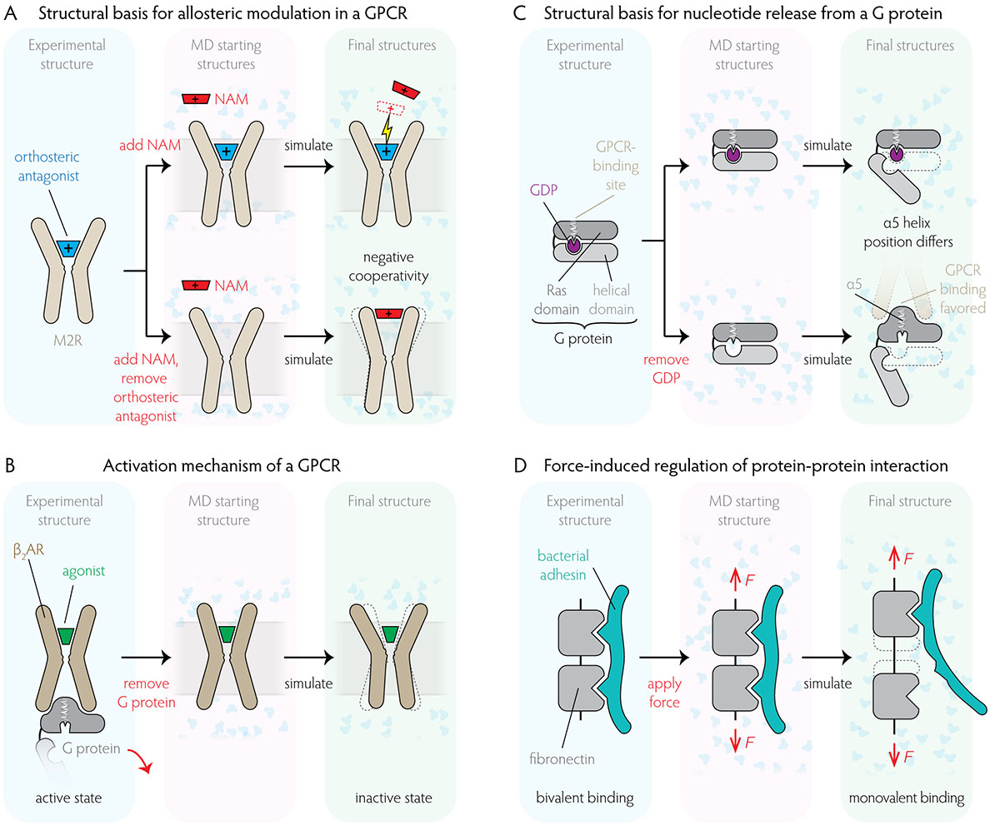

Sam Hertig, PhD
Visual Science Communication & Medical Software
Visual Science Communication
- Offering interactive visualizations, graphics, and videos for selected clients, with an emphasis on visual communication of data and concepts in science and technology
- Leading workshops and seminars on the topics of: Scientific Poster Design, Best Practices for Scientific Visualization, Interactive Data Visualization with D3.js, and Adobe Illustrator for Scientists
- Scroll down to see my portfolio...
- Past clients include: ETH Zurich, Basel University, Stanford University, Universidade de Lisboa, and Comerge AG
About Me
- I am currently working as a Product Manager for Incremed, a Zurich-based MedTech startup. Our product SonoEyes is an Augmented Reality app that aims to improve ergonomics and hand-eye coordination during medical imaging procedures by using the Microsoft HoloLens 2
- My resume (pdf for download, last update: 2021)
- LinkedIn profile
- List of scientific publications on Google Scholar
- Other creative endeavors:
Portfolio
Nuclear Pore Complex

- This rendering illustrates how a team of scientists determined parts of the structure of the RNA export platform, and its relative position within the nuclear pore complex. The circular plot symbolizes the interaction analysis between different proteins in the complex.
- Client: Laboratory of Cellular and Structural Biology, The Rockefeller University (2017)
- Software: Cheetah 3D, UCSF Chimera, and Adobe Photoshop
Interactive visualization of research areas
- Interactive organization chart that maps principal investigators to their research areas. Live examples:
- Client: ETH Zurich (2017 / 2021)
- Software: D3.js
Tracing Water

- Illustration on key processes in the hydrological cycle
- Client: Prof. Corinna Hoose, Karlsruhe Institute of Technology (2017)
- Software: Adobe Illustrator and Blender
Tutorial: Creating Web-Based Interactive Molecular Visualizations
- Online tutorial on how to create a 3D visualization tool that allows anyone with access to the internet to explore a biomolecule interactively. The goal is not to program software for data analysis, but to craft a flexible, fully customizable and powerful data presentation tool.
- Client: Gaël McGill for clarafi.com (2017)
- Software: three.js and UCSF Chimera
Collaborative network in Swiss Systems Biology

- Graphic showing newly developed interdisciplinary collaborations between Swiss research groups resulting from large-scale SystemsX.ch projects.
- PDF file with full-resolution
- Client: SystemsX.ch, The Swiss Initiative in Systems Biology (2017)
- Software: Adobe Illustrator and Circos
SonoEyes: Get Sonographic Vision
- Scientific poster on SonoEyes, an Augmented Reality application for the Microsoft HoloLens. Presented at the Swiss Medtech Day 2019.
- PDF file with full-resolution
- Created for Incremed AG (2019)
- Software: Adobe Illustrator
Sound of Molecules
- Collaborative audio-visual art piece The Sound of Molecules
- Client: NCCR Molecular Systems Engineering, University of Basel (2017)
- Software: Adobe AfterEffects
Cozy hydroxycholesterol

- Visualization of a hydroxycholesterol molecule bound to an oxysterol-binding-protein, which is implicated in signal transduction pathways in both yeast and humans.
- Client: California Institute of Technology (2019)
- Software: Autodesk Maya and UCSF Chimera
Structural Biology of HIV

- Scientific poster on the molecular structure of the immature HI virion. Presented at the conference series Visualizing Biological Data (VIZBI) 2015. Earned the best poster award.
- PDF file with full-resolution
- Created for University of California, San Francisco (2015)
- Software: Adobe Illustrator and UCSF Chimera
How to cut DNA?
- Interactive visualization illustrating the structural mechanism of CRISPR gene editing (web experiment, 2017)
- Software: three.js and UCSF Chimera
Fibronectin as a mechanosensor
- Video of a molecular dynamics simulation of two fibronectin domains in the context of an entire fibronectin fiber.
- Created for the journal article A guide to the visual analysis and communication of biomolecular structural data, Nature Reviews Molecular Cell Biology (2014)
- Software: Autodesk Maya and VMD
HIV in blood serum
- Video illustrating the structure of a HI virus in blood serum.
- Created for a competition hosted on cgsociety.org (2013)
- Tools: Lego bricks and autoPACK (Graham Johnson et al.)
Computer simulations to reveal the mechanism of protein allostery

- Overview figure explaining how computer simulations can assist in revealing the molecular basis of allosteric regulation in proteins.
- Created for Stanford University (2016)
- Software: Adobe Illustrator